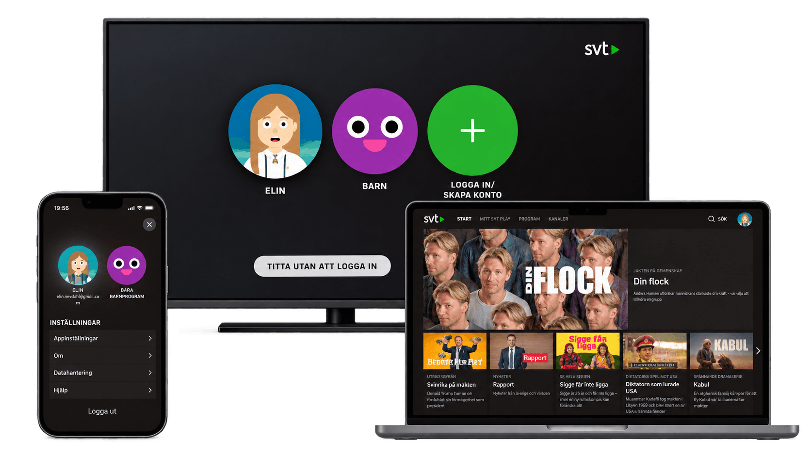
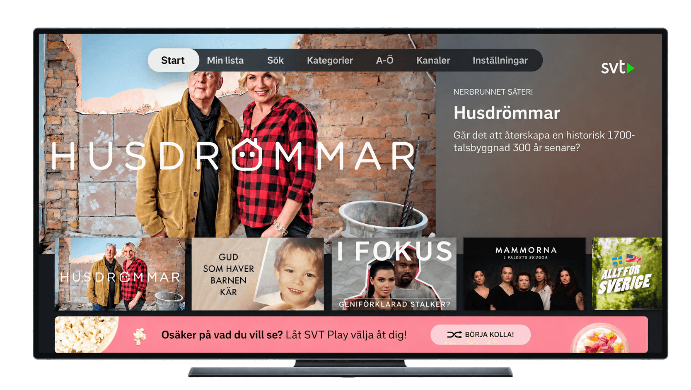
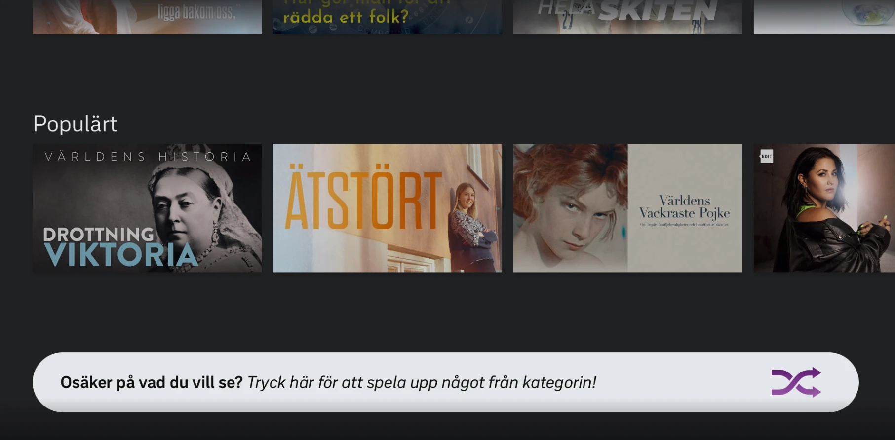
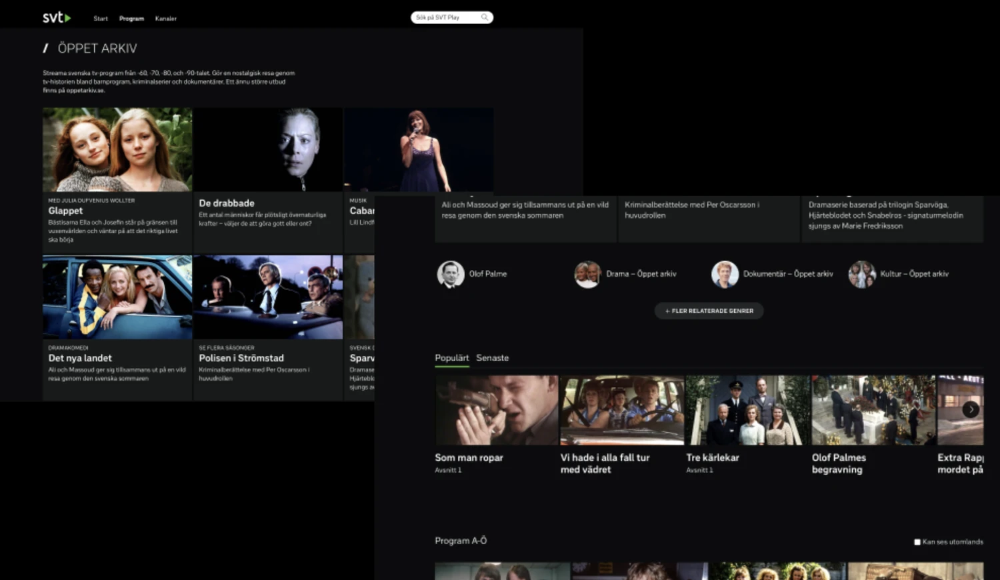
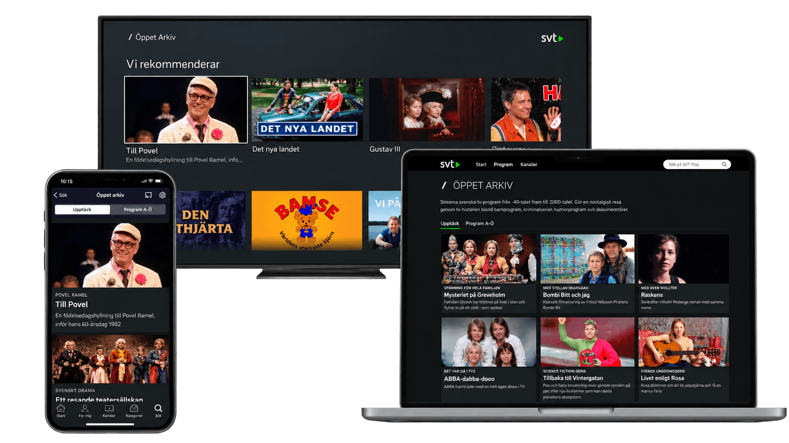
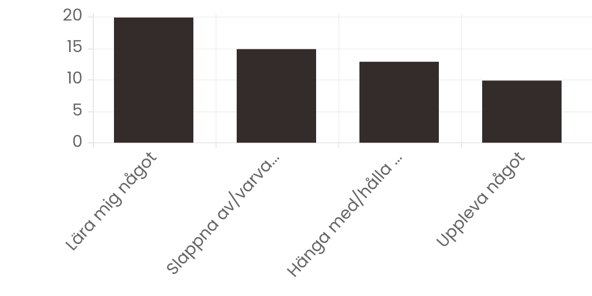
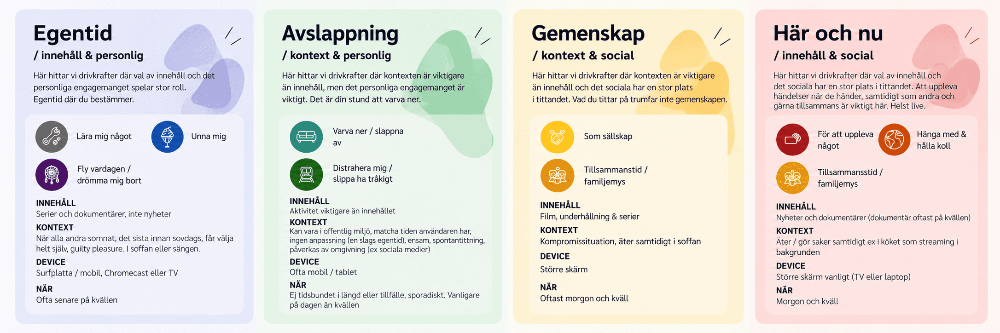
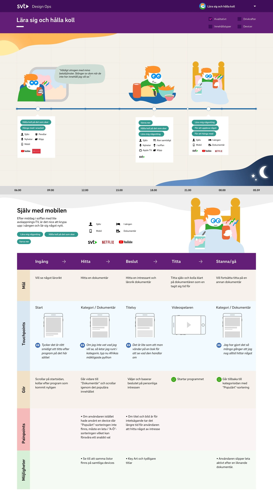

Identify the key challenges
Mapped the questions around accounts and profiles, kids’ experience, and viewing history, then selected history continuity as the focus.
Over 6 years at SVT Play, I progressed from focusing on UX research and design for the web streaming experience to contributing strategically across the entire product ecosystem. I worked across web, TV and mobile, using research, data and experimentation to identify opportunities, shape product direction and continuously improve the user experience.

As SVT Play worked on its sign-in experience, three connected questions came up: how to explain accounts and profiles, how sign-in should work for kids, and what should happen to people’s existing viewing history. I chose the viewing-history challenge for this case study: users needed to know whether they could bring their history into a new account or start fresh.
Mapped the questions around accounts and profiles, kids’ experience, and viewing history, then selected history continuity as the focus.
Designed a sign-in prompt that let people choose whether to move their viewing history to the account or continue without it.
Reviewed responses after sign-in: 43% said they added their history, 39% said they did not, and 18% were unsure.
Used the work to support a more unified experience and bring teams closer around cross-platform viewing behaviour.
The proposed choice gave users control over whether to carry their viewing history into a new account. Responses showed that people made different choices—and some were unsure—highlighting the need to make the transition and its consequences clear.
The work also contributed to broader goals: better insight into viewing habits across platforms, a more unified SVT Play experience, and closer collaboration between teams.

Users often described feeling overwhelmed by the amount of content available, making it harder to decide what to watch. We wanted to explore whether reducing the number of choices could lower the threshold to start watching and make it easier to discover new programmes.
We experimented with a curated list that selected content for users, shifting the experience from browsing a large catalogue to being guided towards something to watch.
Evaluated experiments based on potential impact, feasibility, user needs and SVT Play goals.
Combined quantitative A/B testing with usability testing to understand behaviour and friction.
Synthesised feedback and observed behaviour to identify patterns, pain points and opportunities.
Analysed behavioural data to understand the impact of the tested experience.
Combined qualitative and quantitative evidence to inform improvements and the next iteration.
The A/B test showed that the feature did not increase overall video consumption, while usability testing revealed that its purpose was unclear to users. However, the data also showed shifts in behaviour, including increased engagement with additional lists and an uplift in quality starts within categories.
Usability testing also indicated that the feature could be more relevant when applied to a narrower content selection, such as documentaries or kids’ content. Based on these combined insights, we decided to develop a new experiment that refined the feature’s purpose and scope.

Illustrative uplift by category
Example figures only — not actual SVT Play results.
The project started with the migration of 2,000 videos from Öppet Arkiv to SVT Play, bringing a significant amount of new content into the existing interface. Previous user feedback had also highlighted the difficulty of understanding why SVT’s content was split across two services.
As we explored the migration, it became clear that the existing UI wasn’t designed to handle this scale of content. Users would face challenges with overview, navigation and discovering newly published programmes.
This created an opportunity to rethink how content was structured and presented in the interface. We started by redesigning the category experience, not just for Öppet Arkiv, but across SVT Play, to create a more coherent and scalable way of browsing content.

Before redesign
Combined qualitative and quantitative data with competitive analysis to understand the challenge.
Collaborated with the team to brainstorm, sketch and explore ideas.
Tested prototypes with users and synthesised findings with the team.
Evaluated design changes using data and user feedback.
Published an offboarding message to guide users through the transition.
Qualitative and quantitative research showed that the redesigned categories performed slightly better across several content areas, indicating a more effective way of presenting and navigating the growing content library.
The redesign also created a more consistent foundation for accessing content across SVT Play’s platforms. Alongside the improved experience, we saw better web performance, while the research and design insights could be shared with the mobile and TV teams.
Category design before and after the redesign
Example values reconstructed from the chart; not verified source data.

New design on all platforms
As SVT Play evolved, teams needed a shared understanding of the different reasons users come to the service and what they are trying to accomplish. Without a common research foundation, it was difficult to consistently connect design decisions to user needs.
We set out to map the underlying goals, needs and behaviours of SVT Play users, and understand how these change depending on context and time. This became two complementary research initiatives: user goals and need states, and contextual analysis.
Established shared research questions and aligned SVT Play teams around what we needed to learn.
Mapped and prioritised the goals users have when using SVT Play.
Combined surveys, in-depth interviews and contextual research to understand user needs.
Translated research into need states, user journeys and a year-long map of user needs.
Created a research foundation used across SVT Play to inform discovery and evaluation.
We mapped SVT Play users’ key goals, needs and behaviours across different contexts and times of the year. The research resulted in a set of prioritised user goals, need-state cards, a need-state map and contextual insights that teams could use throughout the design process.
The research became an ongoing foundation for discovery work at SVT Play, helping teams frame problems around user needs and evaluate ideas against a shared understanding of users. We also shared the findings with multiple departments and SVT leadership, extending the research beyond individual projects.



Map with context and user journeys